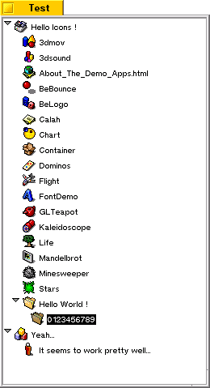

IconListItem v1.1

Source code for a class that will quickly and easily display an icon of your choice and a label into a ListItem.
My main purpose was to be able to add icons into a BOutlineListView.
A sample project will show you how to use this class.
08/06/99 Version 1.1 : Fixes for some memory leaks
07/30/99 Version 1.0 : Initial release